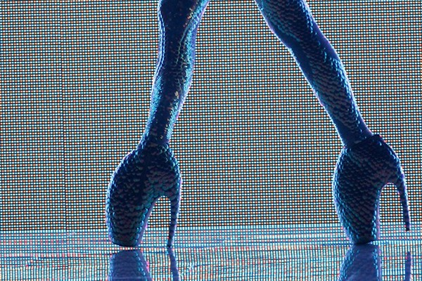
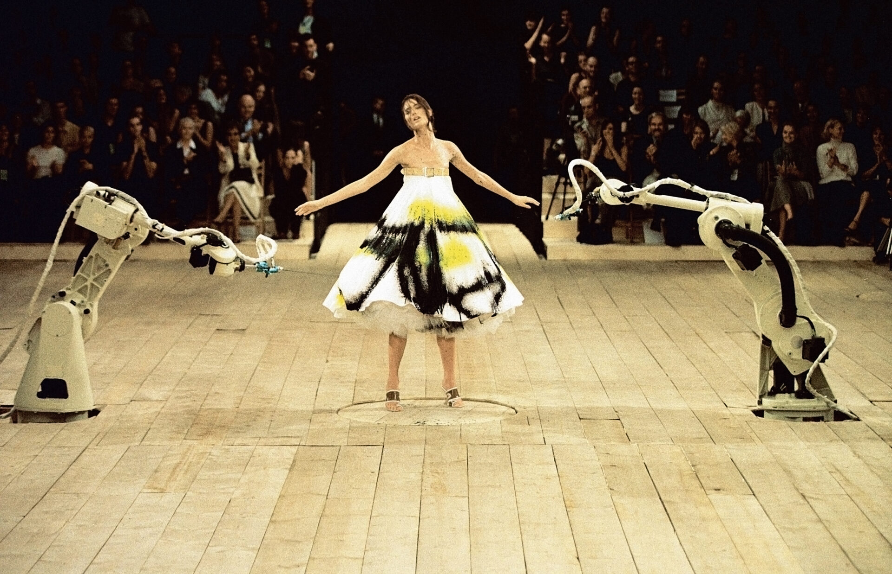

 
| YEAR | SEASON | COLLECTION |
| 1992 | Graduation Collection | "Jack the Ripper stalks his victims" |
| 1993 | Autumn/Winter | "Taxi Driver" |
| 1994 | Spring/Summer | "Nihilism" |
| 1994 | Autumn/Winter | "Banshee" |
| 1995 | Spring/Summer | "The Birds" |
This is where he drew the Claw shoe that is considered one of his most significant designs. He created designs and clothing that entirely captured the feminine essence.
Click here to check out his first runway show.
And here are some photographs of his most groundbreaking designs.
Check out video highlights